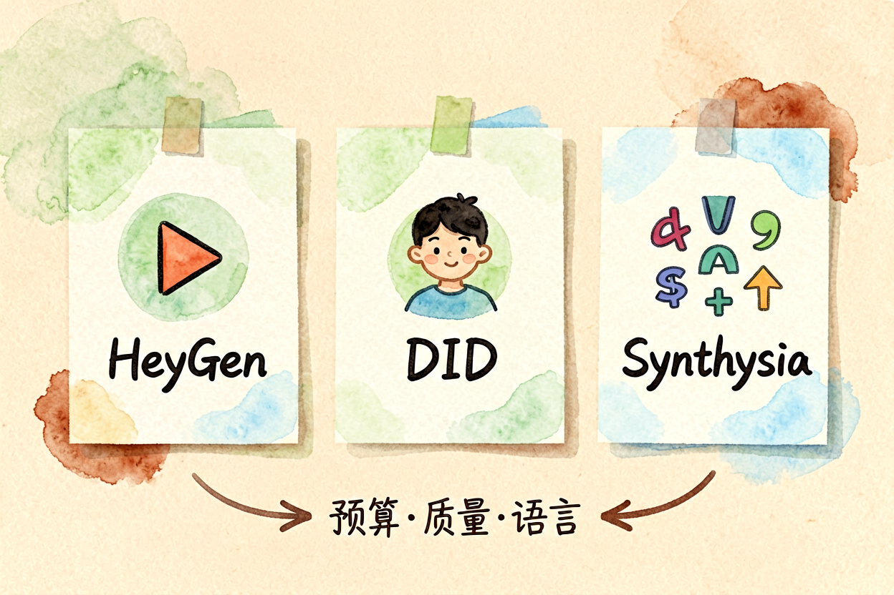
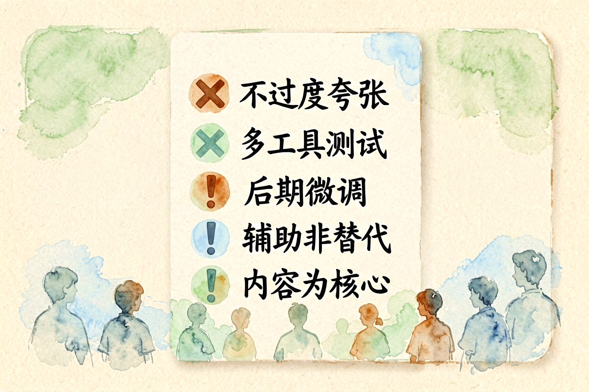
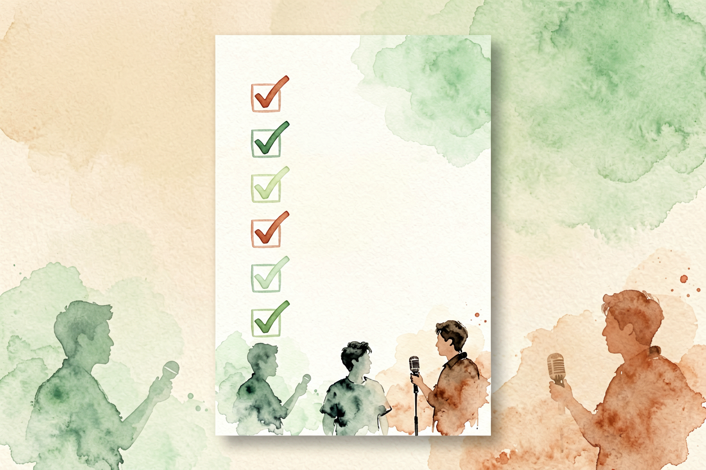

AI 数字人入门：从零创建虚拟主播
数字人不是大公司的专利，普通人用免费工具也能做出逼真虚拟主播，从零到上线跟着这五步走。
AI数字人入门是本文的核心主题。 !配图1数字人概念与原理
{kind=link}
AI数字人入门：什么是数字人
数字人，就是用 AI 生成的虚拟人物，能说话、能动、能出镜讲解。它不是动画，而是基于真实人物形象或原创角色，配合语音合成和口型驱动技术，产出看起来像真人的视频。和AI 视频生成实操不同，数字人侧重「人」的呈现，适合知识科普、产品介绍、培训讲解等场景。
AI 数字人声音配置讲过声音部分，但数字人不止声音，还有形象、动作、口型同步。新手容易把这三件事混在一起想，实际上它们分属不同工具链。本文按步骤拆解，让你清楚每一步该用什么工具。
AI数字人入门：选数字人形象

数字人形象分三类：真人克隆、3D 模型、原创插画风。真人克隆需要你提供照片或视频，AI 学习你的面部特征后生成虚拟形象，最逼真但需要一定素材量。3D 模型是预设的卡通或写实人物，成本低但不够个性化。原创插画风适合品牌 IP，风格统一但需要设计能力。
新手建议从 3D 模型入手，工具内置形象直接套用，零学习成本。真人克隆适合有稳定出镜需求的创作者，比如主播、讲师。图片来源要清晰、正面、光线均匀，模糊或侧脸素材会影响克隆效果。
AI数字人入门：准备文案与配音
数字人视频的本质是「文案 + 声音 + 形象」的组合。文案要先写好，配音再跟进，最后合成视频。顺序不能乱，否则口型和内容对不上。
配音用AI 声音克隆教程里讲过的工具，免费版足够日常使用。选音色时注意：知识讲解类选沉稳音色，年轻受众选活泼音色，正式场合选播音级音色。配音时长控制在 2-5 分钟，太长会导致数字人口型疲惫感明显。
AI数字人入门：选择数字人工具
主流数字人工具分两类：Web 端专业工具和手机 App 轻量工具。Web 端如 HeyGen、D-ID，功能完整但需要付费。手机 App 如剪映 AI、必剪，免费功能足够新手体验。
剪映 AI 功能内置数字人口播模板，适合短视频创作者快速出片。专业需求建议用 HeyGen，支持多语言、自定义形象、口型精准同步。免费额度通常 5-10 分钟，够新手测试流程。
AI数字人入门：生成视频与后期调整

上传文案和配音后，工具自动生成数字人视频。生成后检查三件事：口型是否同步、表情是否自然、背景是否干净。常见问题是口型延迟或过度夸张，调整配音节奏可以缓解。
后期剪辑用剪映或必剪，添加字幕、背景音乐、转场效果。字幕位置避开画面主体，背景音量控制在人声的 20% 以下。导出分辨率 1080p 足够，平台压缩后仍清晰。
AI数字人入门：发布与迭代

数字人视频适合发抖音、B站、视频号，不适合电影级制作。新手第一版不要追求完美，先跑通全流程，再逐步优化。收集观众反馈，调整文案风格、音色选择、画面节奏。
关于 AI 数字人入门，核心逻辑是「工具选对 + 流程跑通 + 持续迭代」。别一上来就花大钱买专业工具，先用免费档试水，确认需求再升级。数字人是效率工具，不是魔法，用好它能省时间，用错它会浪费时间。
AI数字人入门的关键是动手做第一个版本。别等准备完美再开始，先跑出 30 秒视频，再逐步加长、优化。边做边学，比看十篇教程更有效。掌握 AI 数字人入门的技巧，创作效率会大幅提升。

本文信息核对于 2026-09-07。AI 产品的价格、免费额度与功能变动频繁，实际以各工具官网当前说明为准。